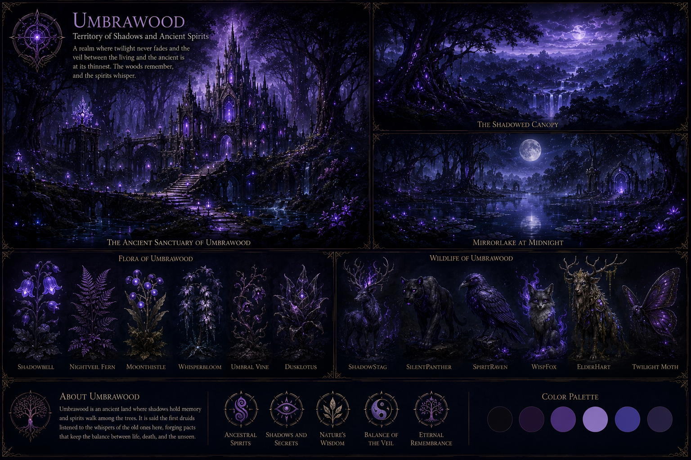
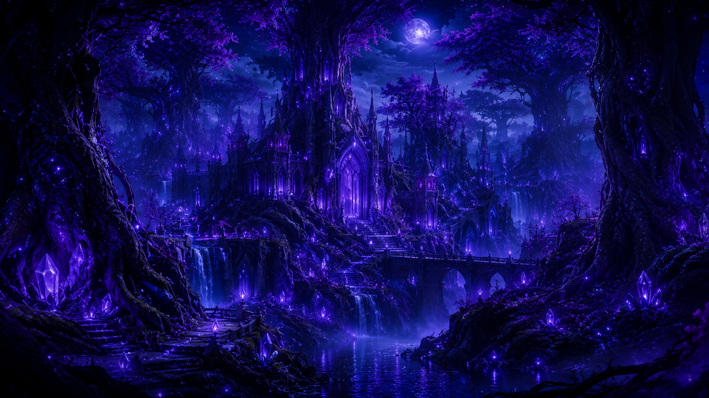
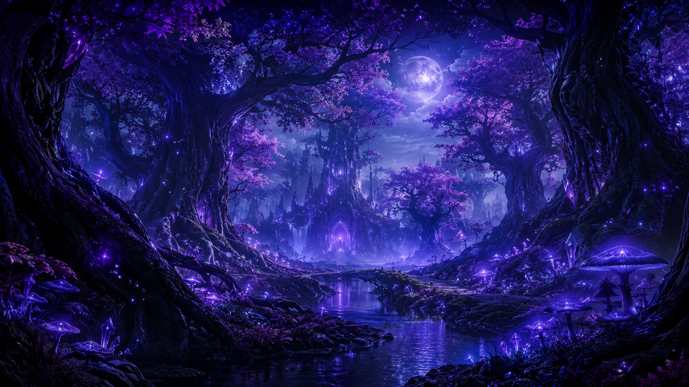
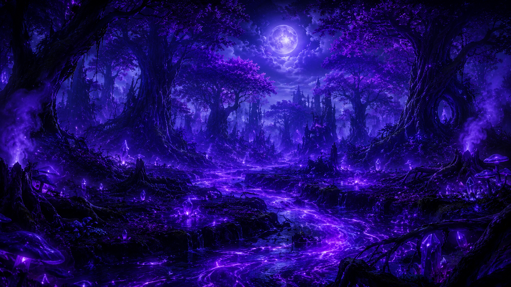
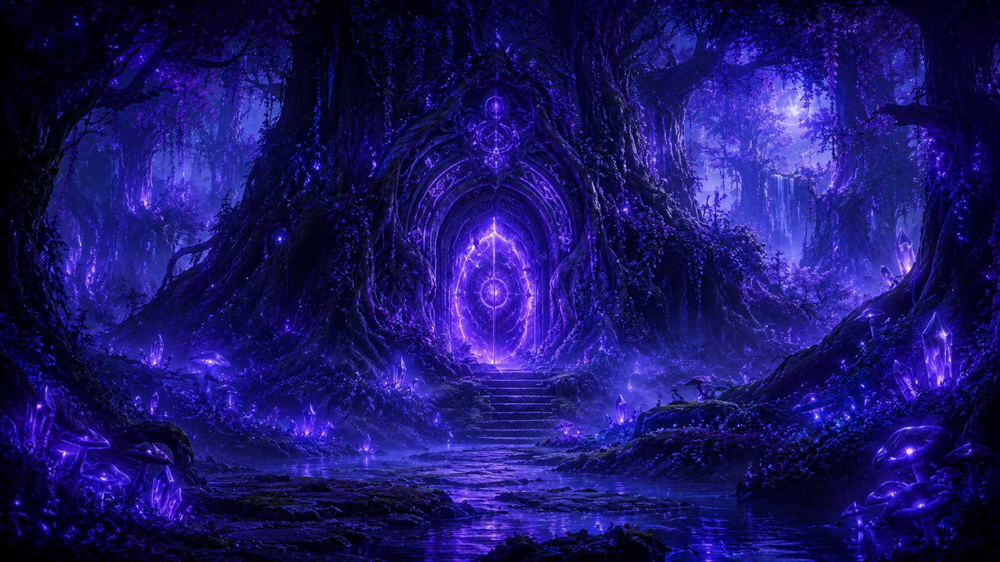
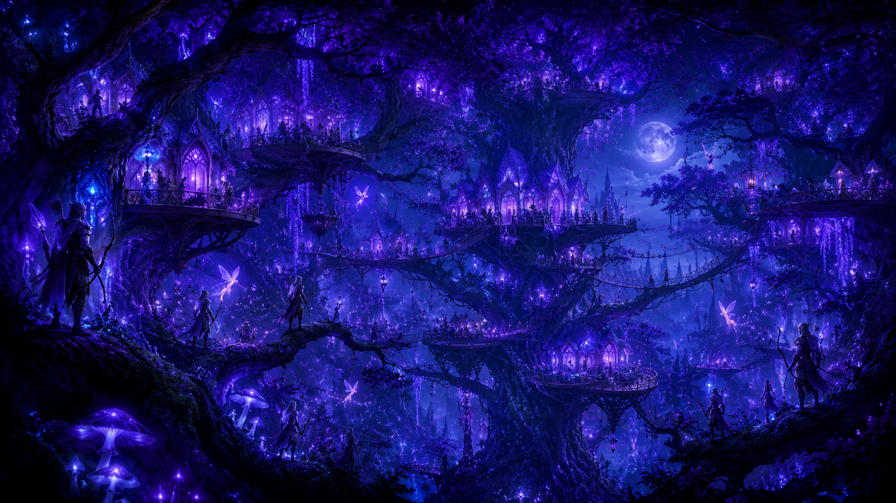
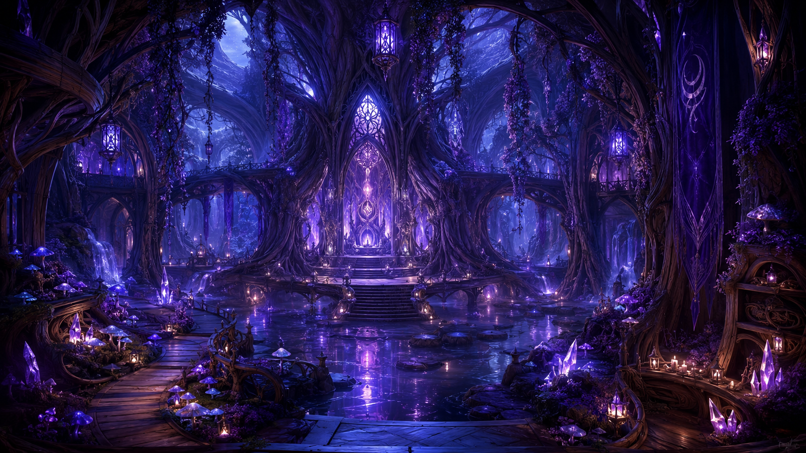
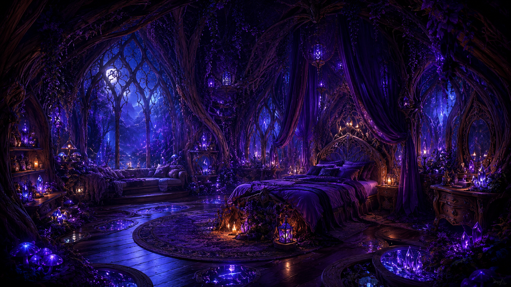
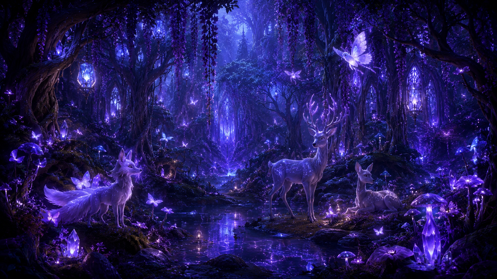
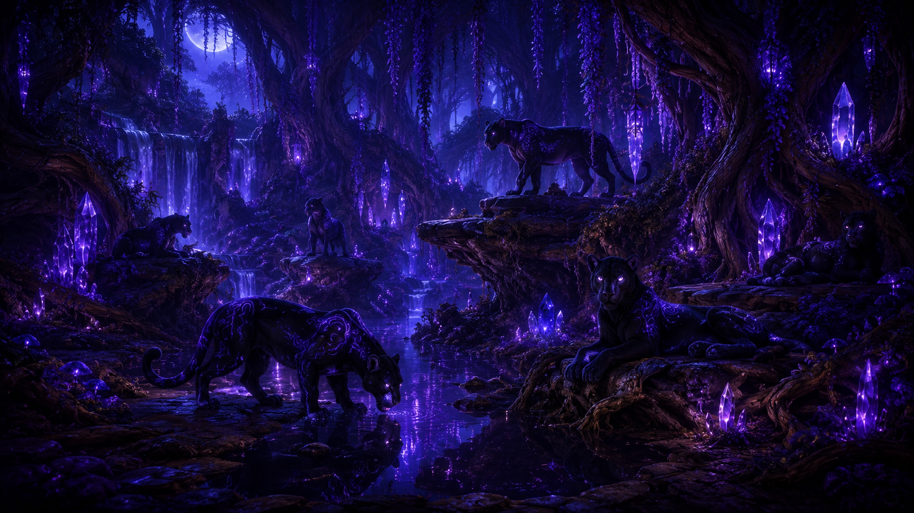

A mysterious forest where moonlight barely reaches the ground, ancient spirits whisper through the trees and forbidden magic lurks beneath every shadow.
Discover UmbrawoodUmbrawood is a forest where daylight struggles to reach the ground. Enormous trees cover the sky with dark
branches and violet leaves, leaving most of the region beneath permanent shadow, mist and faint moonlight.
Its inhabitants learned to build within this strange environment. Houses rise among gigantic trees, hidden
sanctuaries stand deep within the woods and ancient structures have slowly been consumed by vines and magical
vegetation. Nocthollow itself is difficult for outsiders to find without someone familiar with the forest.
The Circle of Shadows governs the Dark Elves, Spirits and Witches who inhabit Umbrawood. Shadow and moon magic
have shaped much of their culture, but the forest also contains older and more dangerous forces. Ancient portals,
corrupted rivers and forgotten places suggest that not everything beneath its trees was meant to be discovered.
Its flora reflects that mystery. Violet trees, glowing mushrooms, dark flowers and luminous vines thrive beneath
the canopy. Moon panthers, spectral creatures, forest spirits and nocturnal animals wander between the shadows,
while stranger beings are said to inhabit the deepest areas where even the Night Sentinels rarely travel.

Nocthollow
Circle of Shadows
Dark Elves, Spirits and Witches
Shadow and Moon Magic
Cold, Foggy and Moonlit
Night Sentinels








